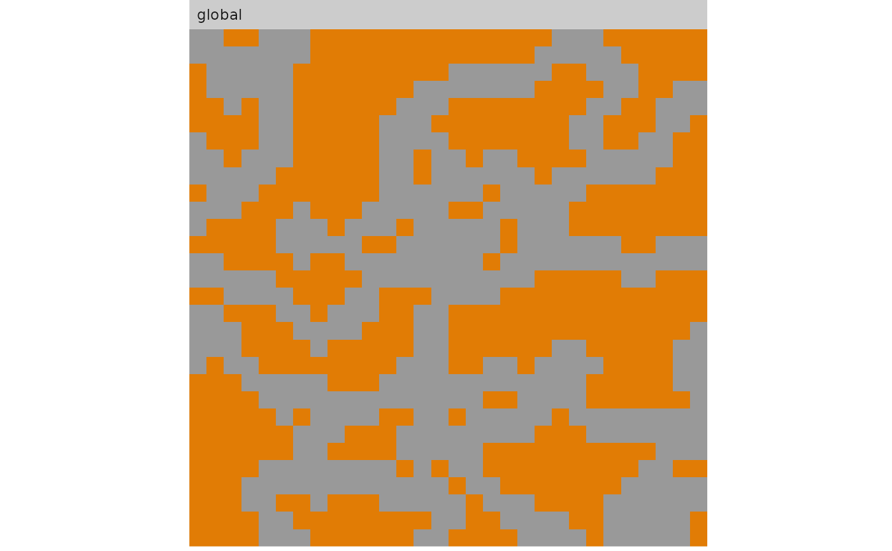
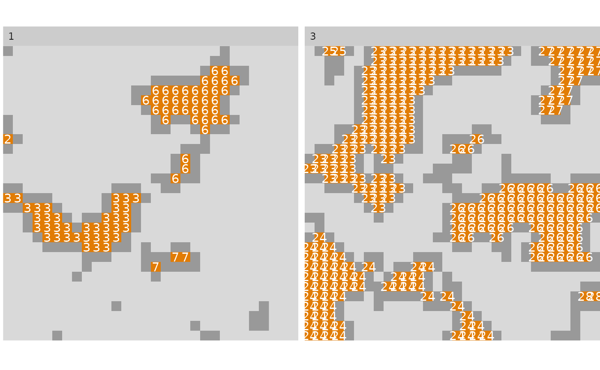

Show core area
show_cores( landscape, directions, class, labels, nrow, ncol, consider_boundary, edge_depth ) # S3 method for RasterLayer show_cores( landscape, directions = 8, class = "all", labels = FALSE, nrow = NULL, ncol = NULL, consider_boundary = FALSE, edge_depth = 1 ) # S3 method for RasterStack show_cores( landscape, directions = 8, class = "all", labels = FALSE, nrow = NULL, ncol = NULL, consider_boundary = FALSE, edge_depth = 1 ) # S3 method for RasterBrick show_cores( landscape, directions = 8, class = "all", labels = FALSE, nrow = NULL, ncol = NULL, consider_boundary = FALSE, edge_depth = 1 ) # S3 method for stars show_cores( landscape, directions = 8, class = "all", labels = FALSE, nrow = NULL, ncol = NULL, consider_boundary = FALSE, edge_depth = 1 ) # S3 method for list show_cores( landscape, directions = 8, class = "all", labels = FALSE, nrow = NULL, ncol = NULL, consider_boundary = FALSE, edge_depth = 1 )
| landscape | Raster object |
|---|---|
| directions | The number of directions in which patches should be connected: 4 (rook's case) or 8 (queen's case). |
| class | How to show the core area: "global" (single map), "all" (every class as facet), or a vector with the specific classes one wants to show (every selected class as facet). |
| labels | Logical flag indicating whether to print or not to print core labels. boundary should be considered as core |
| nrow, ncol | Number of rows and columns for the facet. |
| consider_boundary | Logical if cells that only neighbour the landscape boundary should be considered as core. |
| edge_depth | Distance (in cells) a cell has the be away from the patch edge to be considered as core cell |
ggplot
The functions plots the core area of patches labeled with the corresponding patch id. The edges are the grey cells surrounding the patches and are always shown.
# show "global" core area show_cores(landscape, class = "global", labels = FALSE)# show the core area of every class as facet show_cores(landscape, class = "all", labels = FALSE)